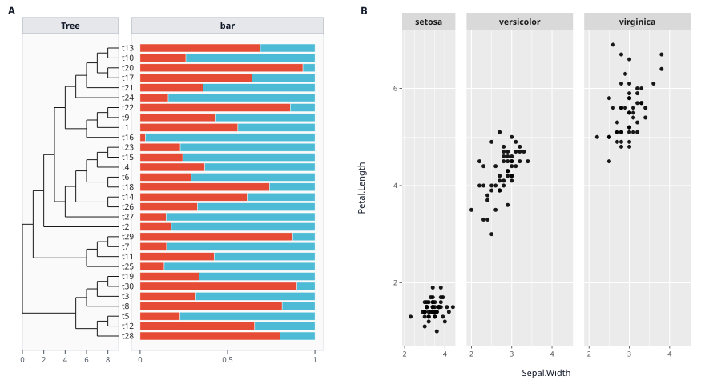
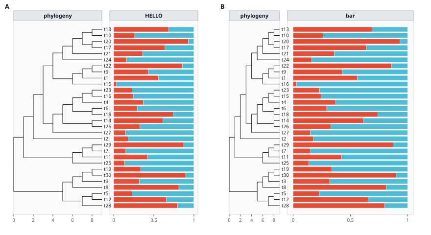
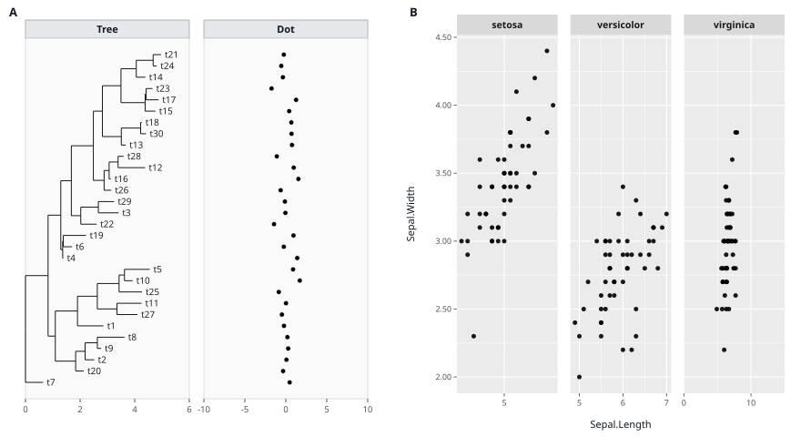
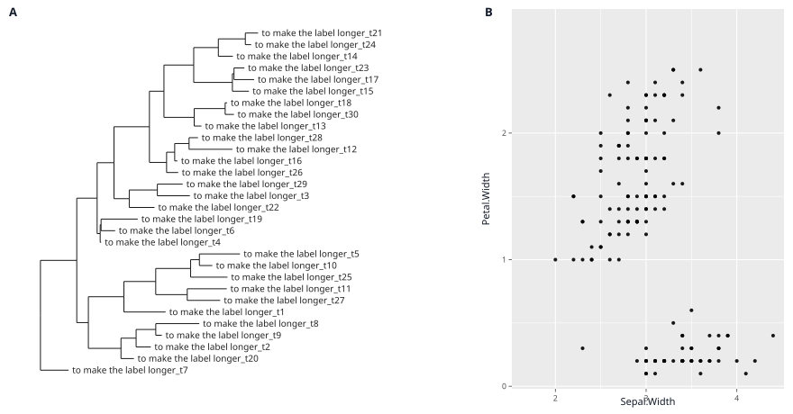
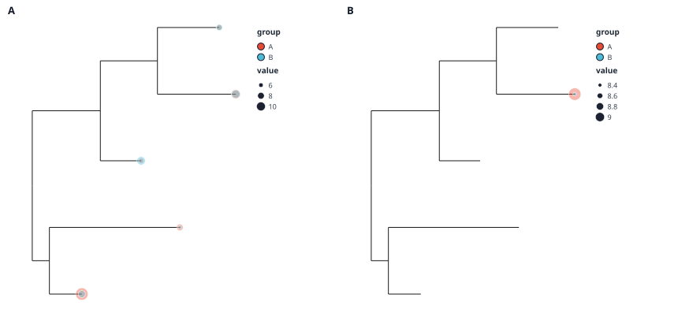

12. ggtree Utilities
Complete reproduction of all 11 Chapter 12 utility workflows in ggtree-py: facet proportion and label control, subset-aware geometric layers, dynamic layout transformations, per-panel axis limits, tidy filtering and unnesting, tip-order extraction, padded tip labels, and interactive SVG clade annotation.
12.1.1 facet_widths
facet_widths() adjusts relative panel column widths consistently for both composite ggtree + geom_facet plates and standard multi-facet ggplot panels.

▶ Show / Hide Python Code facet_widthsgeom_facetgeom_barfacet_grid
from ggtree import (
set_seed, rtree, runif, data_frame, melt, ggtree, geom_tiplab,
geom_facet, geom_bar, aes, xlim_tree, facet_widths, ggplot,
geom_point, facet_grid, read_table, system_file, theme, plot_list,
)
set_seed(123)
tree = rtree(30)
p = ggtree(tree, branch_length="none") + geom_tiplab() + theme(legend_position="none")
a = runif(30, 0, 1)
b = [1.0 - v for v in a]
df = melt(data_frame(label=tree.tip_label, a=a, b=b), id_vars=["label"])
p2 = (
p
+ geom_facet(
panel="bar",
data=df,
geom=geom_bar,
mapping=aes(x="value", fill="factor(variable)"),
orientation="y",
width=0.8,
stat="identity",
)
+ xlim_tree(9)
)
pa = facet_widths(p2, {"Tree": 0.5})
iris = read_table(system_file("extdata", "TDbook", "iris.tsv"), header=True, sep="\t")
pb = facet_widths(
ggplot(iris, aes("Sepal.Width", "Petal.Length")) + geom_point() + facet_grid(".~Species"),
{"setosa": 0.5},
)
plot_list(pa, pb, ncol=2, tag_levels="A")
12.1.2 facet_labeller
facet_labeller() renames one or more facet strip headers and composes seamlessly with facet_widths().

▶ Show / Hide Python Code facet_labellerfacet_widthsgeom_facetgeom_bar
from ggtree import (
set_seed, rtree, runif, data_frame, melt, ggtree, geom_tiplab,
geom_facet, geom_bar, aes, xlim_tree, facet_labeller, facet_widths,
theme, plot_list,
)
set_seed(123)
tree = rtree(30)
p = ggtree(tree, branch_length="none") + geom_tiplab() + theme(legend_position="none")
a = runif(30, 0, 1)
b = [1.0 - v for v in a]
df = melt(data_frame(label=tree.tip_label, a=a, b=b), id_vars=["label"])
p2 = (
p
+ geom_facet(
panel="bar",
data=df,
geom=geom_bar,
mapping=aes(x="value", fill="factor(variable)"),
orientation="y",
width=0.8,
stat="identity",
)
+ xlim_tree(9)
)
pa = facet_labeller(p2, {"Tree": "phylogeny", "bar": "HELLO"})
pb = facet_widths(facet_labeller(p2, {"Tree": "phylogeny"}), {"Tree": 0.4})
plot_list(pa, pb, ncol=2, tag_levels="A")
12.2 Geometric Layers
geom_text2() and geom_label2() evaluate row-level subset predicates identically in both Cartesian ggplot charts and phylogenetic trees.

▶ Show / Hide Python Code geom_text2geom_label2coord_cartesiantheme_light
from ggtree import (
read_table, system_file, ggplot, ggtree, rtree, aes,
geom_point, geom_text2, geom_label2, coord_cartesian,
theme_light, theme, plot_list,
)
mpg = read_table(system_file("extdata", "TDbook", "mpg.tsv"), header=True, sep="\t")
p = (
ggplot(mpg, aes(x="displ", y="hwy"))
+ geom_point(aes(color="class"))
+ geom_text2(aes(label="manufacturer", subset="(hwy > 40) | (displ > 6.5)"), nudge_y=1)
+ coord_cartesian(clip="off")
+ theme_light()
+ theme(legend_position=[0.85, 0.75])
)
p2 = ggtree(rtree(10)) + geom_label2(aes(subset="node < 5", label="label"))
plot_list(p, p2, ncol=2, tag_levels="A")
12.3 Layout Utilities
Layout modifiers (layout_dendrogram(), layout_rectangular(), layout_circular(), layout_fan(), layout_inward_circular()) recompute coordinate geometry dynamically without rebuilding tree layers.

▶ Show / Hide Python Code layout_dendrogramlayout_rectangularlayout_circularlayout_fan
from ggtree import (
set_seed, rtree, ggtree, layout_dendrogram, layout_rectangular,
layout_circular, layout_fan, layout_inward_circular,
geom_tiplab, plot_list,
)
set_seed(2019)
x = rtree(20)
p = ggtree(x)
pa = p
pb = p + layout_dendrogram()
pc = ggtree(x, layout="circular") + layout_rectangular()
pd = p + layout_circular()
pe = p + layout_fan(angle=90)
pf = p + layout_inward_circular(xlim=4) + geom_tiplab(hjust=1)
plot_list(pa, pb, pc, pd, pe, pf, ncol=3, tag_levels="A")
12.4.1 Expand x Limit for a Specific Facet Panel
Combine xlim_tree() and xlim_expand(limits, panel) to tune axis spans for individual geom_facet() or facet_grid() panels independently.

▶ Show / Hide Python Code xlim_treexlim_expandgeom_facetfacet_grid
from ggtree import (
set_seed, rtree, rnorm, data_frame, ggtree, geom_tiplab,
geom_facet, geom_point, aes, xlim_tree, xlim_expand,
ggplot, facet_grid, read_table, system_file, plot_list,
)
set_seed(2019 - 5 - 2)
x = rtree(30)
p = ggtree(x) + geom_tiplab()
d = data_frame(label=x.tip_label, value=rnorm(30))
p2 = p + geom_facet(panel="Dot", data=d, geom=geom_point, mapping=aes(x="value"))
pa = p2 + xlim_tree(6) + xlim_expand([-10, 10], "Dot")
iris = read_table(system_file("extdata", "TDbook", "iris.tsv"), header=True, sep="\t")
g = ggplot(iris, aes("Sepal.Length", "Sepal.Width")) + geom_point() + facet_grid(".~Species", scales="free_x")
pb = g + xlim_expand([0, 15], "virginica")
plot_list(pa, pb, ncol=2, tag_levels="A")
12.4.2 Expand Plot Limit by Ratio (hexpand / vexpand)
hexpand() and vexpand() enlarge data bounds by a relative fraction in either direction (direction=-1 expands left/bottom).

▶ Show / Hide Python Code hexpandvexpandgeom_tiplabggplot
from ggtree import (
set_seed, rtree, ggtree, geom_tiplab, hexpand, vexpand,
ggplot, aes, geom_point, read_table, system_file, plot_list,
)
set_seed(2019 - 5 - 2)
x = rtree(30)
x.tip_label = [f"to make the label longer_{lbl}" for lbl in x.tip_label]
p1 = ggtree(x) + geom_tiplab() + hexpand(0.4)
iris = read_table(system_file("extdata", "TDbook", "iris.tsv"), header=True, sep="\t")
p2 = (
ggplot(iris, aes("Sepal.Width", "Petal.Width"))
+ geom_point()
+ hexpand(0.2, direction=-1)
+ vexpand(0.2)
)
plot_list(p1, p2, tag_levels="A", widths=[0.6, 0.4])
12.5.1 Filter Tree Data (td_filter)
Pass td_filter(...) as layer data to restrict geometric layers to computed node subsets such as offspring() of an internal ancestor.

▶ Show / Hide Python Code td_filteroffspringgeom_textgeom_nodepoint
from ggtree import (
set_seed, rtree, ggtree, offspring, aes, geom_text,
geom_nodepoint, td_filter, hexpand,
)
set_seed(2020)
tree = rtree(50)
p = ggtree(tree)
selected_nodes = offspring(p, 67)["node"]
res = (
p
+ geom_text(aes(label="label"), data=td_filter("isTip & node in selected_nodes"), hjust=0)
+ geom_nodepoint(aes(subset="node == 67"), size=5, color="blue")
+ hexpand(0.12)
)
res
12.5.2 Flatten List-Column Tree Data (td_unnest)
Use nest() to store multi-observation list columns per tip and td_unnest() (optionally composed with _f=td_filter(...)) to expand them during plotting.

▶ Show / Hide Python Code nesttd_unnesttd_filterscale_size
from ggtree import (
set_seed, rtree, rnorm, data_frame, rep, c, nest, ggtree,
geom_point, aes, td_unnest, td_filter, scale_size, plot_list,
)
set_seed(1997)
tr = rtree(5)
d = data_frame(
id=rep(tr.tip_label, 2),
value=[abs(v) for v in rnorm(10, 6, 2)],
group=c(rep("A", 5), rep("B", 5)),
)
d2 = nest(d, value="value", group="group")
p = ggtree(tr) % d2
p2 = (
p
+ geom_point(aes("x", "y", size="value", colour="group"), data=td_unnest(["value", "group"]), alpha=0.4)
+ scale_size(range=[3, 10], limits=[3, 10])
)
p3 = (
p
+ geom_point(
aes("x", "y", size="value", colour="group"),
data=td_unnest(["value", "group"], _f=td_filter("isTip & node == 4")),
alpha=0.4,
)
+ scale_size(range=[3, 10], limits=[3, 10])
)
plot_list(p2, p3, ncol=2, tag_levels="A")
12.6.1 Extract Tip Order (get_taxa_name)
get_taxa_name(p) returns displayed tip labels in vertical top-to-bottom visual order matching the plotted tree topology.

▶ Show / Hide Python Code get_taxa_namegeom_hilightgeom_tiplablabs
from ggtree import set_seed, rtree, ggtree, geom_tiplab, geom_hilight, get_taxa_name, labs
set_seed(123)
tree = rtree(10)
p = ggtree(tree) + geom_tiplab() + geom_hilight(node=12, extendto=2.5)
x = "Taxa order: " + ", ".join(get_taxa_name(p))
p + labs(title=x)
12.6.2 Padding Taxa Labels (label_pad)
label_pad() left-pads tip names with dots or spaces to uniform character width for crisp monospace right-alignment alongside geom_tiplab(..., align=True).

▶ Show / Hide Python Code label_padgeom_tiplabxlimplot_list
from ggtree import set_seed, rtree, data_frame, label_pad, ggtree, geom_tiplab, aes, xlim, NA, plot_list
set_seed(2015 - 12 - 21)
tree = rtree(5)
tree.tip_label[1] = "long string for test"
d = data_frame(
label=tree.tip_label,
newlabel=label_pad(tree.tip_label),
newlabel2=label_pad(tree.tip_label, pad=" "),
)
p = ggtree(tree) % d + xlim(NA, 5)
p1 = p + geom_tiplab(aes(label="newlabel"), align=True, family="mono", linetype="dotted", linesize=0.7)
p2 = p + geom_tiplab(aes(label="newlabel2"), align=True, family="mono", linetype=None, offset=-0.5) + xlim(NA, 5)
plot_list(p1, p2, ncol=2, tag_levels="A")
12.7 Interactive ggtree Annotation (identify)
Interactive clade highlighting, labeling, and hover inspection powered by embedded SVG tooltips (geom_hilight_interactive, geom_cladelab_interactive, geom_point_interactive, geom_tiplab_interactive). Hover over nodes, tips, or highlighted clades below to test live tooltips.
▶ Show / Hide Python Code identifygeom_hilight_interactivegeom_cladelab_interactivegeom_point_interactive
from ggtree import (
set_seed, rtree, ggtree, aes, geom_hilight_interactive,
geom_cladelab_interactive, geom_point_interactive,
geom_tiplab_interactive, hexpand, theme_tree2,
)
set_seed(2021)
tr = rtree(30)
p = (
ggtree(tr)
+ geom_hilight_interactive(node=34, fill="#38BDF8", alpha=0.25, tooltip="Clade 34 highlighted")
+ geom_hilight_interactive(node=45, fill="#F59E0B", alpha=0.25, tooltip="Clade 45 highlighted")
+ geom_cladelab_interactive(node=34, label="Clade A", offset=0.18, barcolor="#0284C7", textcolor="#0284C7", tooltip="Interactive Clade A")
+ geom_cladelab_interactive(node=45, label="Clade B", offset=0.18, barcolor="#D97706", textcolor="#D97706", tooltip="Interactive Clade B")
+ geom_point_interactive(aes(tooltip="label"), size=2.4, color="#1D4ED8")
+ geom_tiplab_interactive(aes(tooltip="label"), size=2.4)
+ hexpand(0.32)
+ theme_tree2()
)
p